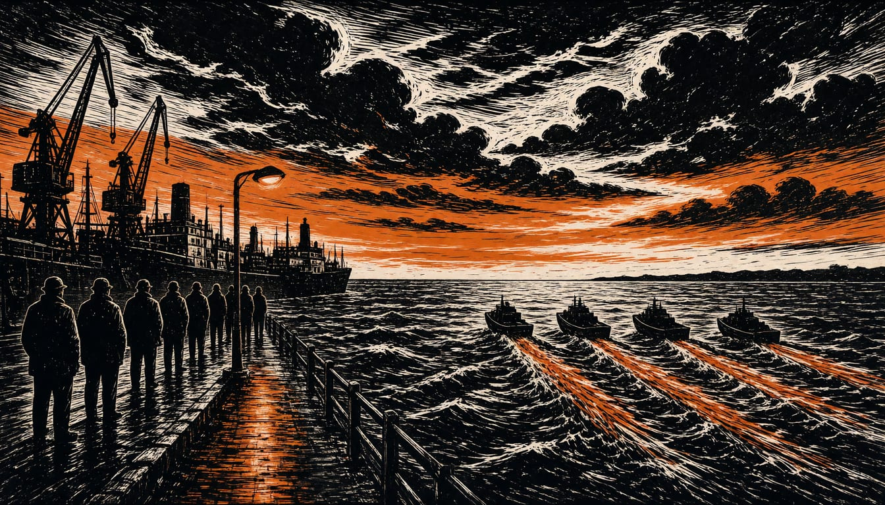

Nordic defence ministers agree to develop a joint defence agreement
The decision of 12 November 2026 would give the Nordic defence cooperation a legal framework. Separately, the Riksdag voted to raise the military service age limit to 47, effective 1 January 2027.

The Nordic defence ministers have agreed to develop a Nordic Defence Cooperation Agreement, which would give their defence cooperation a legal framework. The decision was made on 12 November 2026, the Swedish government reported.
The ministers framed the agreement as a demonstration of shared commitment to NATO and a further contribution to Allied deterrence and defence, the Swedish government reported. The Swedish Government's Defence Preparedness Committee described the security policy situation as characterised by a heightened state of alert, in the title of its June 2026 interim report on total defence.
In early November 2026, the county administrative board of Västra Götaland ran a two-day staff and leadership exercise. The scenario was a war in which Sweden risked being drawn in and a government decision on heightened preparedness. Sten Tolgfors, the board's governor, said Western Sweden matters to any allied reinforcement, because Gothenburg is the Nordic region's largest port. He added that the region's food production and other critical infrastructure are of national and international importance. Part of that importance is providing host nation support to foreign troops within Nato cooperation.
On 4 November 2026, the Riksdag voted in favour of the government's proposal to improve supply of personnel in the military defence. The purpose was to strengthen resilience. Under the amendments, the upper age limit for military service is 47 years, the Riksdag reported. Conscripts past the limit keep a duty of service for standby duty or war service in that calendar year, the Riksdag reported. The number of standby duty days will also increase in the case of heightened alert.
The Swedish amendments will take force on 1 January 2027, the Riksdag reported. When the government decides on heightened preparedness, Länsstyrelsen, the county administrative board, activates two war staffs, the county administrative board reported: the regional staff at county level and the civil area staff covering the whole Western civil area.